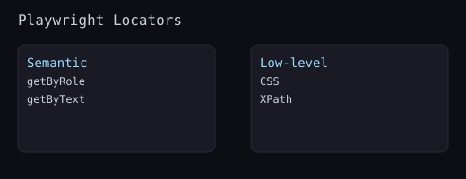

Semantic locators describe elements by their purpose (role, name, label), mirroring how users experience the UI. They are more durable than CSS/XPath because they track accessible names, not DOM structure.
// Click the primary submit button by its accessible name
await page.getByRole('button', { name: 'Submit' }).click();
// Find a link by its text label
await page.getByRole('link', { name: 'Pricing' }).click();
// Narrow by level for headings
await expect(page.getByRole('heading', { level: 1 })).toBeVisible();
// Use visible label
await page.getByLabel('Email').fill('user@example.com');
await page.getByLabel('Password').fill('secret');
// Fallback if label is missing
await page.getByPlaceholder('Search products').fill('Laptop');// Assert a welcome message
await expect(page.getByText('Welcome back')).toBeVisible();
// For custom widgets lacking semantics, add data-testid
await page.getByTestId('cart-icon').click();// Limit search to a specific card
const card = page.getByRole('article').filter({ hasText: 'Pro Plan' });
await card.getByRole('button', { name: 'Choose' }).click();
// Locate a row containing a specific cell
const row = page.getByRole('row').filter({ has: page.getByRole('cell', { name: /Active/ }) });
await expect(row).toHaveCount(1);#root > div:nth-child(2) > button; prefer roles/labels.textContent() polling instead of expect(locator).toHaveText(...).getByLabel for inputs and getByRole for submit. Assert URL is /dashboard.has/hasText.data-testid attributes that are stable and reviewable over brittle DOM paths.